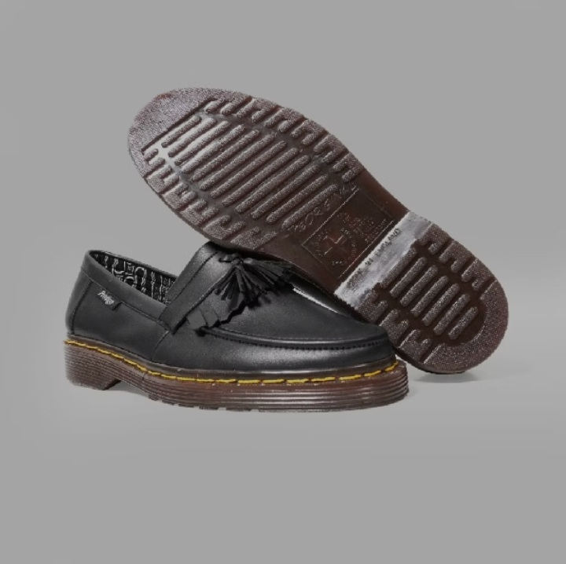

Kategori
Sepatu Kulit Klasik
Sneakers Lokal
Sepatu Batik
Boots Formal
Sepatu Olahraga
Flat Shoes
Sepatu Anak
Pantofel Pria
Slip On
|
Detail Produk
|

Preview Sudut Pandang:
|
Prodigo Tassel Loafers - Black Casual Formal
Rp 310.000
Rp 415.000
(Hemat 25%)
Terjual 830+
Deskripsi Produk:
Tampil berkelas dengan sentuhan vintage modern bersama Prodigo Tassel Loafers. Menggabungkan kemudahan
sepatu model *slip-on* dengan estetika formal yang santai, sepatu ini dirancang menggunakan bahan kulit
sintetis premium berwarna hitam matte yang luwes dan tangguh. Keunikan utamanya terletak pada ornamen
rumbai kulit (*tassel*) klasik di bagian lidah sepatu, jahitan benang kuning (*yellow welt stitching*)
yang mengitari sol karet cokelat tebal bertekstur, serta lapisan bagian dalam (*lining*) kain bermotif
batik parang nusantara yang eksklusif dan nyaman. Cocok digunakan untuk bekerja di kantor, menghadiri
acara semi-formal, maupun melengkapi gaya kasual cerdas Anda sehari-hari.
Spesifikasi:
| Bahan Atas |
Premium Synthetic Leather (Matte Black Finish) |
| Aksen Desain |
Classic Fringed Apron & Double Tassel (Rumbai Gantung) |
| Lapisan Dalam |
Soft Fabric Lining with Exclusive Batik Parang Pattern |
| Outsole |
Durable Ribbed Rubber Sole dengan Jahitan Benang Kuning Kontras |
| Garansi |
30 Hari Resmi Tukar Ukuran & Defek Produksi |
Keunggulan Produk:
✅ Model *Slip-On* Praktis, Memudahkan Copot-Pasang Tanpa Ribet Tali
✅ Ornamen *Tassel* dan Rumbai Memberikan Karakter Kasual-Elegan yang Khas
✅ Sol Karet Tebal dengan Alur Bergerigi, Sangat Stabil dan Bebas Licin
✅ Desain Interior Motif Batik Unik yang Menyerap Keringat dengan Baik
|
← Kembali ke Katalog Produk
|
Promo
OFFICE PROMO
Tingkatkan wibawa profesional Anda kerja hari ini!
Info Pengiriman
JNE / J&T / SiCepat / Grab
Pembayaran
Transfer Bank Mandiri/BCA/BRI/COD
|